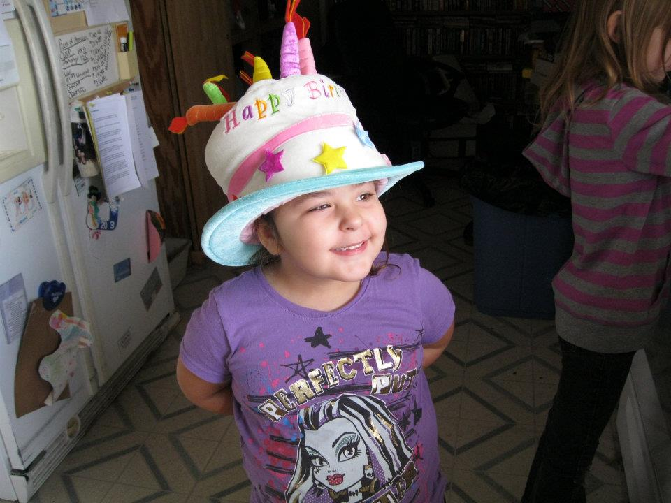

Family Members (by age)
Our family is made up of five members. I have been blessed with four wonderful children who bring me joy and laughter everyday. While some are away at the moment, I carry them with me in my heart everywhere.
My name is Laura, and I have the honor of being the head of the household. There are many things in my life to be thankful for. As my children grow and learn, they help me to discover what the important things in life are.
Vonda is my oldest daughter. She truly has grown into such a special young women. I miss seeing her everyday, but am proud to watch her make her own way in life.
Maitreya is my second child. She has such a joy for life and isn't afraid to speak her mind. She is definitely going to change the world someday.
Terran is my only son. However, this doesn't seem to effect him too adversely (yet). He is quite the intelligent young man who is always questioning life.
Isabel is the baby of the family, but don't tell her that! Her infectious laugh always brings a smile to my face. She is already showing her creativity, and I wouldn't be surprised if she becomes an author someday.

Individual Bios
Mom
Age: 38; DOB: 5/3 My name is Laura, and I am 38 years old. I work full time as a receptionist. I am also currently attending Full Sail University as a Web Development and Design major. My ultimate goal is to one day have my own business. When I am not busy with school and work, I enjoy spending time with my family and friends. I especially enjoy watching the kids as they find new and interesting ways of making me laugh. My favorite past times are reading mysteries or Sci/Fi novels. I also enjoy singing, much to the chagrin of those around me.
Vonda
Age: 18; DOB: 6/23 Vonda is currently living in Florida with her father, step mother, and sisters. She is enrolled in her second year of college, having graduated high school a full year early. One of her greatest talents is her artistic ability. She can look at an image and draw it as if she were the original artist. She is very intelligent, and has one of the biggest hearts I know.
Maitreya
Age: 15; DOB: 5/7 Maitreya is currently living in Michigan with her father and grandparents. She is attending high school and is also working on improving her own artistic skills. She loves anime and spending time with her friends. You never have to worry about what she is thinking or feeling, because she has no problem speaking her mind. Her intelligence and drive will take her far
Terran
Age: 9; DOB: 10/2 Terran is in third grade, and loves playing nija and swords. He enjoys reading and playing on the computer. Once he gets going on telling a story, be prepared to stay a while. He can take a simple topic and turn it into a mini novel with little to no effort. He can be a little rambunctious, but he has a great heart and cares for everyone he meets.
Isabel
Age: 5; DOB: 11/13 Isabel is a typical five year old. She loves to play and discover new things. She truly knows how to make those around her feel special and loved. Of all the children, she is probably the most expressive and entertaining. She loves making up new songs to sing. Once she has made up her mind to do something, almost no one can keep her from her intended path. She will be able to accomplished anything she puts her mind to!
To TopFamily Pictures

 To Top
To Top